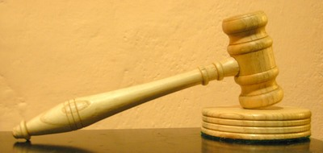
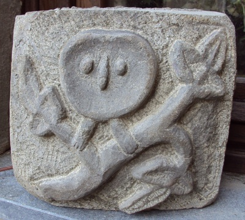

{kind=link}
{kind=link}
{kind=link}
{kind=link}
{kind=link}
{kind=link}
{kind=link}
Gallery of Woodcarvings
Some of the things I've made.
I'm a big fan of medieval sculpture, no doubt in part because where I grew up (Tideswell) there was a wonderful church "The Cathedral of the Peak" which was full of exceptional woodcarvings by the Hunstone family.
Spice Cupboard

Beech(?)
My first proper piece. Carved on my mother's dinner table from an old school desk which was horrible, really dry and splintery wood. The Tudor Rose was taken straight out of Whittling and Woodcarving by E.J. Tangerman, a fun book from 1936. I assume I got the peacocks and elephants from a bestiary, the patterns were made up.
Bowl


Pear, 12cm diameter
The piece of which I'm most proud, it just worked. My own design (though putting animal's feet on things is hardly original). Turned on a clunky hand drill jig thing, before I had a proper lathe. By then I did at least have a little workshop, the cellar of the house in Buxton.
Book Rack
Oak
Haven't got a photo of the whole thing (it's at my mother's), just these end panels. I think I got the figures from pictures of old church woodcarvings, the rest of the design made up. Seems I forgot to carve the centre boss thing above the squirrel, that should probably be a rose.
Chalice

Chestnut
Crude, but I like it for that. Turned from an old log.
Gavel

Chestnut(?)
Made as a gift. The wood was scraps from an old barrel - I think it's chestnut although the colours much lighter than the other pieces I've used.
Mandolin Restoration


I'd wanted a mandolin for years but never enough to buy one. Then I spotted the remains of one on Castelnuovo market (about a tenner) and couldn't resist. Remarkably it sounds quite good.
The Vinocaster

The body made from recycled wine barrel wood. I've written up how it was made.
Owl

River rock
Ok, not wood, but this seemed as good a place to put it as any. Design taken from an old church bench-end carving.
Head

River rock
Not wood and I don't really like the way it turned out. I've got quite a few things like that, along with loads of unfinished and/or abandonded pieces.